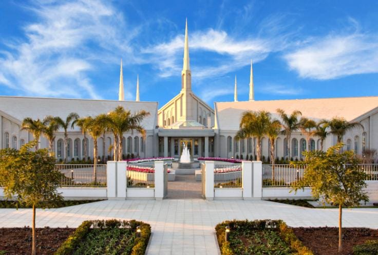
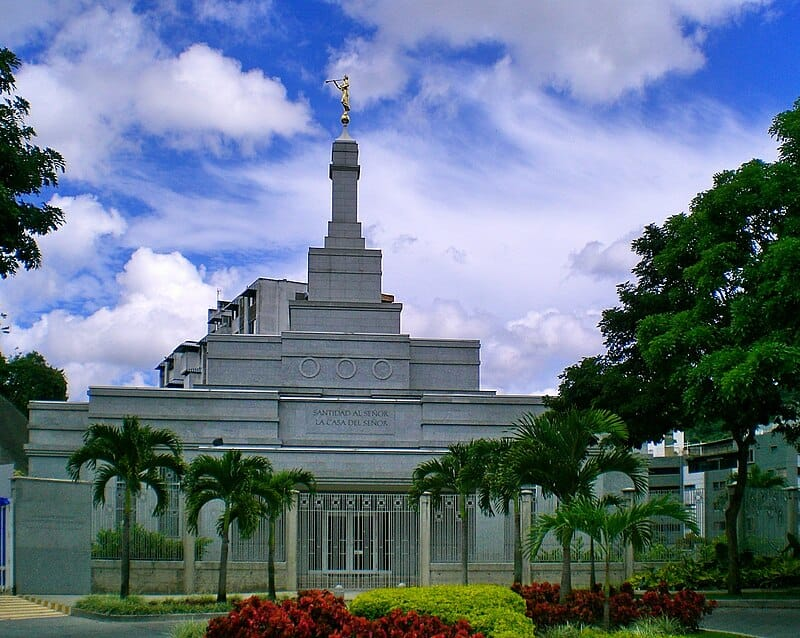

TEMPLE ALBUN
Home
Old
New
Large
Small
Galería de Templos
Templo de La Paz
Templo de Cochabamba
Templo de Arequipa
Templo de Lima
Templo de Santiago

Templo de Buenos Aires
Templo de Bogotá
Templo de Quito

Templo de Caracas